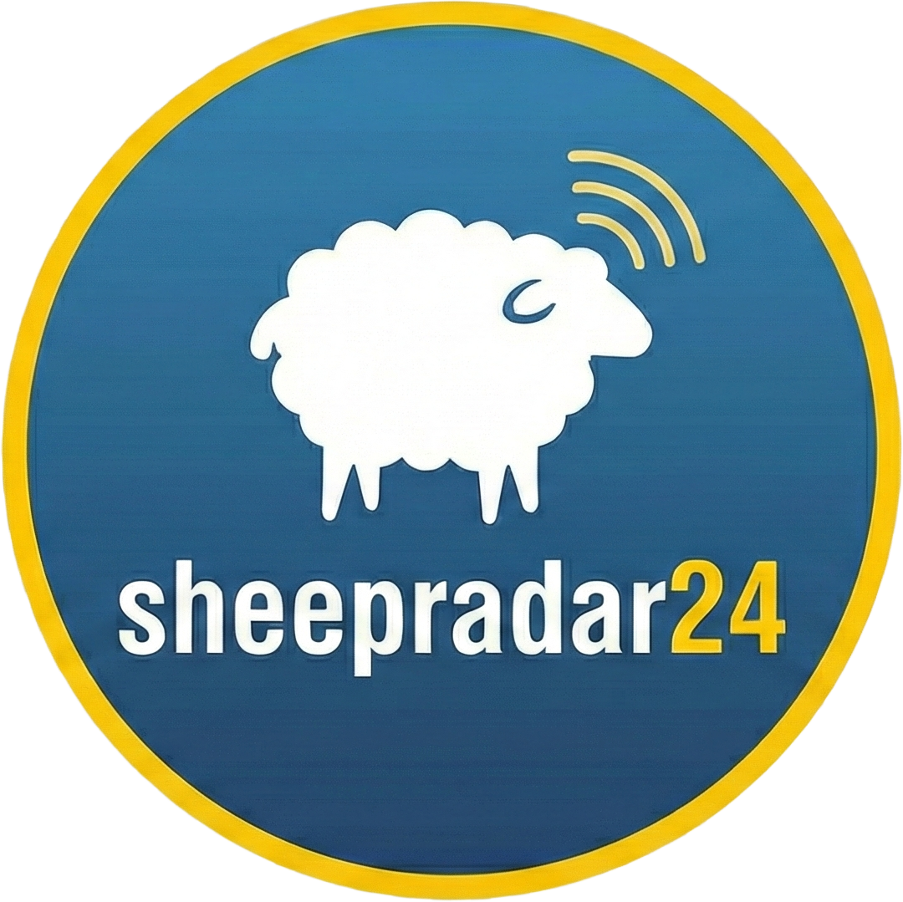

Understand animal response
Measure how sheep and dogs respond to sensing, prediction and intervention, keeping welfare part of the system design rather than an afterthought.
Welfare

Auto ShepherdSystem architecture
Auto Shepherd brings aerial sensing, animal localisation, simulation, communications and robot-dog control into one shared research programme. The map below follows the working pipeline and will grow with the project poster.
Each work package can stand alone while contributing to a common loop: observe the animals, understand their movement, decide what should happen next, and communicate that decision safely.
Open research projects
The research page is ready for the objectives, methods and development locations from the project poster. For now, these are the three lines the programme is being shaped around.
Measure how sheep and dogs respond to sensing, prediction and intervention, keeping welfare part of the system design rather than an afterthought.
Develop a dependable loop between aerial observation, field communications, simulation and ground control that can be tested and explained.
Explore what farmers, researchers and animals need from a useful shepherding system, including the practical, ethical and economic conditions for use.
Development locations and objective-specific methods will be added here from the poster, with links out to the subsystem pages that make each line of research possible.
01 / Subsystem
The eye in the sky: a reliable path from aircraft data to useful, deliberate field observation.
Working outline
Streaming, telemetry, camera pose and future autonomy belong together here. The page will grow with the drone control package.
Video, GPS, camera information and telemetry into the shared ROS2 system.
Coordinate, plan and review a flight before sending it into the field.
Keep targets in frame while accounting for battery life, risk and handover.
02 / Subsystem
Make a moving flock measurable: detect individuals, follow them over time, and place them back on the map.
Working outline
Computer vision, tracking and geo-referencing form the bridge between drone observation and decisions made elsewhere in the system.
Optimise a vision pipeline for real-time detection from UAV-captured video.
Maintain identities and movement histories through changing aerial views.
Convert image observations into global positions, paths and useful flock groupings.
03 / Subsystem
Build a place to test flocking, control strategies and cross-system behaviour before the next field run.
Working outline
Simulation ties together organic flocking, robot-dog influence and synthetic data so new ideas can be explored with repeatable conditions.
Develop strategies for influencing sheep movement toward a target location.
Use computer vision inputs to refine a closed-loop natural systems model.
Work with drone and vision systems to produce a useful synthetic stream.
04 / Subsystem
Keep the distributed system coherent when its robots, radios and operators are spread across the field.
Working outline
Messages, serial bridges and empirical radio studies make the wider shepherding system possible beyond a single machine or network.
Establish shared protocols and a messages package for every subsystem.
Connect LoRa and nRF hardware to the field robotics communication layer.
Map signal attenuation and weigh bandwidth needs against field conditions.
05 / Subsystem
Bring the shepherding decision to ground level through a robot dog that can be supervised, tested and trusted.
Working outline
This page will hold the robot-dog interface, control modes, safety constraints and the behaviours that connect autonomy to animal welfare.
Connect the physical dog to the shared state and command interfaces.
Explore movement strategies that influence a flock without treating animals as obstacles.
Keep human approval, fallback behaviour and field constraints in the control loop.